两个现场
同样是送别，有人倾尽温柔，有人仓皇遮掩。
另一座城市里，一辆改装货车停在复兴大桥附近。车内，一具宠物遗体正在被焚烧，烟尘飘散在空气中。工作人员说，业务“不让公开宣传”，因为如果那边是禁燃区，烧的时候会有烟。
宠物殡葬这门承载着无数家庭情感寄托的新兴行业，正站在一个矛盾的十字路口：一边是急速膨胀的市场需求，一边是制度供给的严重滞后。当越来越多人想要好好说一声再见，他们却发现，连“好好”本身，都还没有被定义。
第一章
1.26亿只“毛孩子”的最后一程
人与动物的关系，正在被重新定义。那些曾经的看门犬、捕鼠猫，如今有了新的身份：“毛孩子”“家人”“室友”“情感伴侣”。
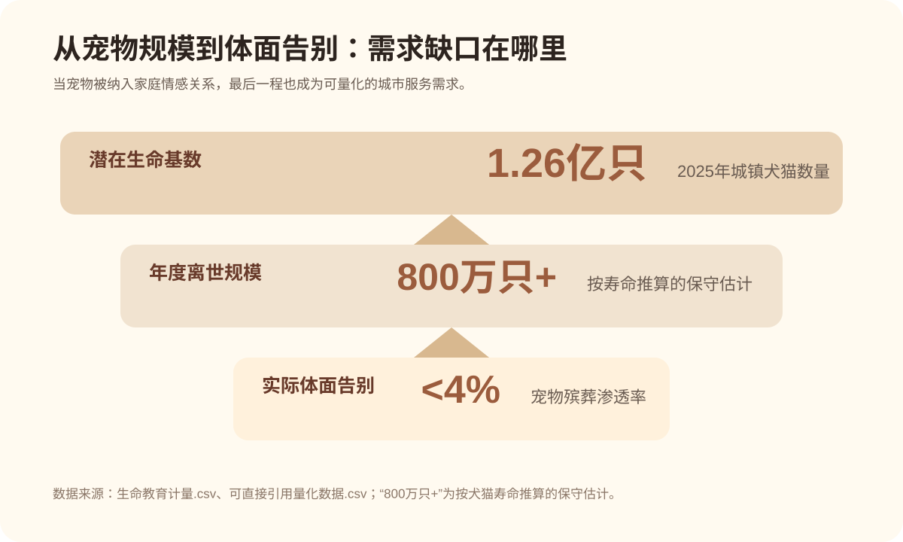
数据表 01
从“宠物规模”到“告别需求”的量化线索
来源文件：生命教育计量.csv| 指标 | 时间 | 地区 | 数值 | 单位 | 用途 |
|---|---|---|---|---|---|
| 城镇犬猫数量 | 2025 | 中国 | 1.26 | 亿只 | 潜在告别需求基数 |
| 全国宠物数量 | 2024 | 中国 | 1.2 | 亿只以上 | 估算年死亡宠物规模 |
| 每年死亡宠物规模 | 2025 | 中国 | 数百万 | 只/年 | 报道开头的规模化表达 |
| 单只宠物告别服务价格跨度 | 2025 | 中国一二线调查 | 300-3000 | 元 | 说明告别成本分化 |
注：表内“数百万”“1.2亿只以上”等为公开报道口径，正式制图时应在图注中保留原始表达，避免过度精确化。
在这组庞大的数字背后，每年有数百万只宠物走向生命的终点。它们的离世，往往悄无声息：没有讣告，没有葬礼，甚至没有被认真讨论过。但失去的痛苦，并不比失去任何一位家人轻。
一边是喷薄而出的情感需求，一边是低到近乎沉默的市场渗透。这中间巨大的裂缝，正是这个行业存在的理由，也是它所有问题的起点。
第二章
养宠人眼中的“告别”：需求、信任与焦虑
一份面向养宠人士的专项调研收集了57份有效问卷。样本以18-25岁女性学生为主，恰恰是当下青年养宠主力人群的一个切片。
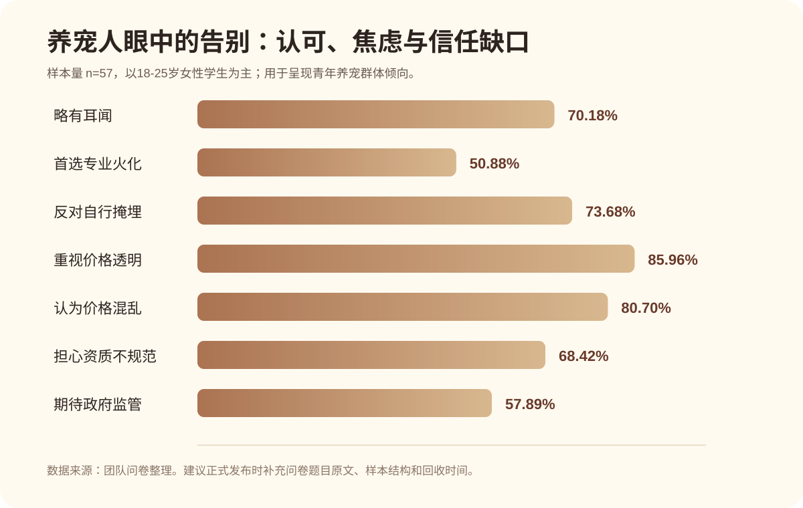
认可价值，却不敢轻易购买
70.18%的受访者对宠物殡葬行业仅“略有耳闻”，近九成认可专业殡葬服务的必要性，但本地宠物殡葬服务的实际购买率仅为3.51%。意愿与转化之间，横亘着价格、信任与可及性的三重鸿沟。
他们要的不是更便宜，而是更可信
85.96%的受访者将“价格透明、无隐形消费”列为首要考量。宠主不仅需要服务，更需要确认服务是真实的：全程可视、价格公开、火化可信。
宠主们想要的其实很简单：在不得不告别的那一刻，能够确定地、安心地、不被欺骗地，好好说一声再见。
第三章
摆渡人，是怎样一群年轻人
公开报道和访谈中的宠物殡葬从业者，许多并非传统殡葬行业出身。他们有人因自己的宠物离世而入行，有人因看见粗糙处理方式而创业，也有人把这份工作理解为一种情绪支持服务。
从汽车改装到宠物殡葬
曾经养过的小狗因车祸意外去世，没能体面告别的遗憾，让他在2021年成为一名宠物殡葬师。
“我们也是生命教育者”
95后，家具产品设计专业出身，如今坐在告别室地板上，替一只猫梳理毛发。
最年轻的摆渡人之一
2005年出生，两年间已经亲手送别数百只“毛孩子”。理由很简单：他觉得这件事值得做。
承接情绪，而非只是处理遗体
2018年入行，起初只是因为自己的小狗去世了，想给它一个体面的葬礼。
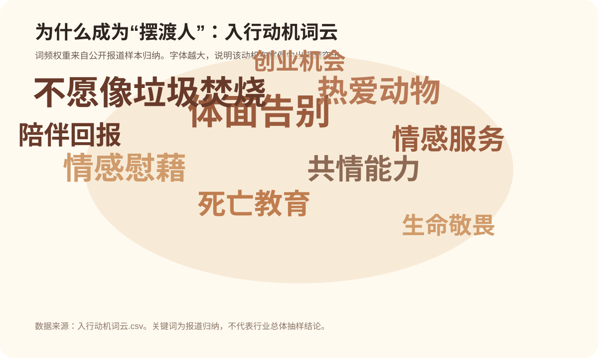
体面告别
不愿像垃圾焚烧
热爱动物
情感慰藉
共情能力
生命教育
陪伴回报
数据表 02
公开报道中的从业者画像样本
来源文件：从业者画像样本.csv| 人物 | 地区 | 角色 | 入行背景 | 主要困难 | 可信度 |
|---|---|---|---|---|---|
| 王英豪 | 北京/公开访谈 | 宠物殡葬师/作者 | 家具设计师转行，从学徒到开店 | 选址、从零学习、情感劳动 | B |
| 橘子 | 北京丰台 | 宠物殡葬师/店长 | 自己的小狗去世后萌生入行想法 | 职业培训缺少统一认证 | A |
| 李超 | 北京 | 宠物殡葬馆经营者 | 爱犬去世后觉得处理粗糙，后创办宠慕 | 选址难、低频消费、盈利周期长 | A |
| 谭景元 | 重庆两江新区 | 宠物生命纪念馆创始人 | 创办拾光森林宠物生命纪念馆 | 已服务500多只，高峰月约80只 | A |
数据表 03
入行动机权重：这不是一门只由利润驱动的生意
来源文件：入行动机词云.csv体面告别10
不愿像垃圾焚烧9
热爱动物8
情感慰藉8
共情能力7
死亡教育7
注：权重来自公开报道样本归纳，适合作为词云或横向条形图的数据基础。
但这份工作带来的，远不止情感上的损耗。国家从未设立宠物殡葬师资格认证，这个职业未被纳入《国家职业资格目录》。市面上流通的“宠物殡葬师”证书，没有任何法律效力。
他们送走了成千上万只宠物，却仍然无法给自己一个堂堂正正的职业称谓。当一个行业依赖个体的良心而不是共同的规则来兜底，它注定走向分裂和混乱。
第四章
五年303%：企业狂奔，监管掉队
企查查数据显示，截至2026年3月底，国内宠物殡葬相关现存企业达4.73万家。从2021年到2025年末，相关企业存量从1.14万家增长至4.61万家，五年内增幅达到303.3%。
超六成企业注册资本在100万元以内。门槛低，进场快，人人都觉得这里有机会。这个行业几乎是在一夜之间热闹起来的。
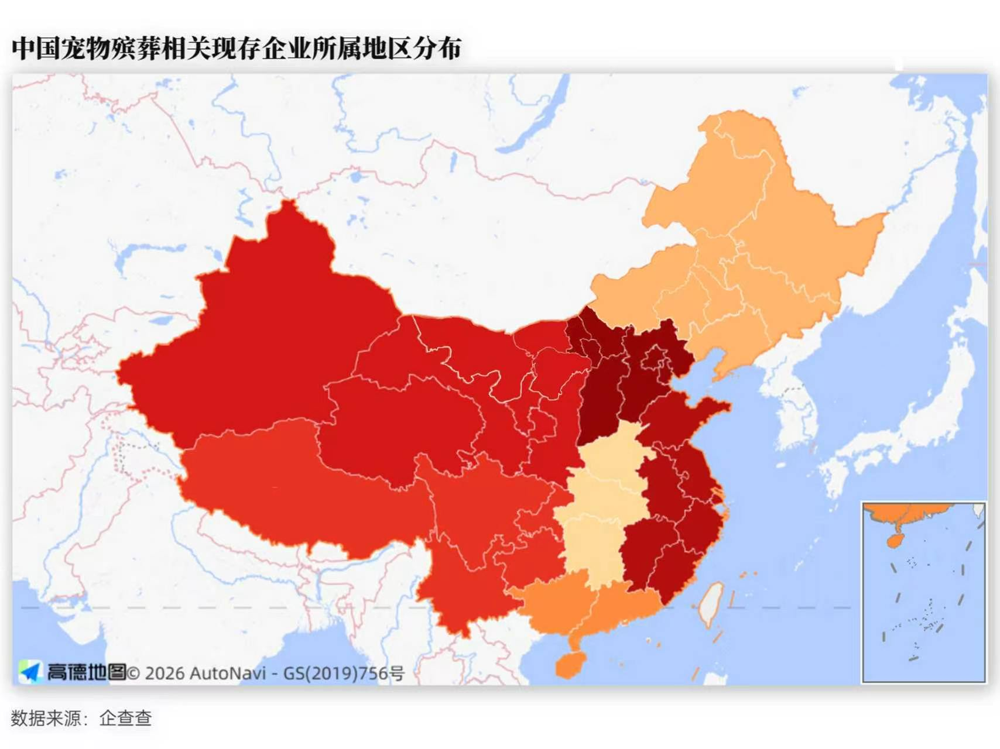
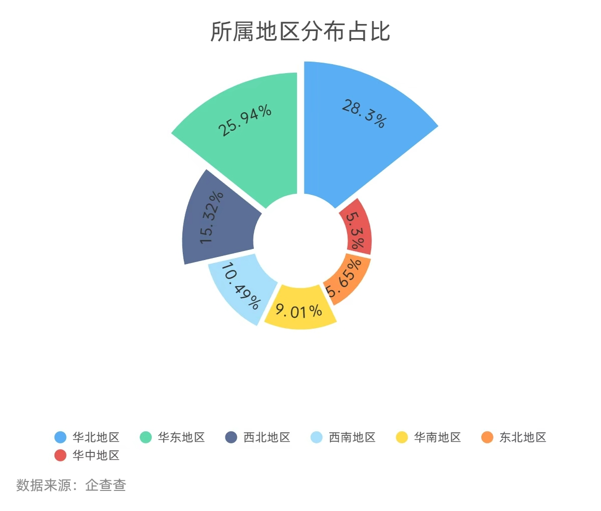
数据表 04
市场规模预测：公开值与推算值必须分开看
来源文件：市场规模与预测.csv / 可直接引用量化数据.csv| 数据类型 | 年份 | 数值 | 单位 | 序列 | 说明 |
|---|---|---|---|---|---|
| 历史/观测 | 2023 | 18.25 | 亿元 | 中国公开值 | 新华社转述研究报告 |
| 预测 | 2025 | 50 | 亿元 | 中国公开预测 | 预测值，需标注非官方统计 |
| 预测 | 2030 | 100+ | 亿元 | 中国公开预测下限 | 原文为突破100亿元 |
| 企业口径 | 2024报道时点 | 4965 | 家 | 经营范围口径 | 不等于真实开展殡葬服务机构 |
第五章
灰色地带：从“后备箱火化”到“流动火化车”
无证经营、后备箱火化、郊区仓库改装、二手医用焚化炉；承诺单独火化，现场却集体混烧；草木灰被当作宠物骨灰交还给主人；同一座城市，基础报价从300元到3000元不等。
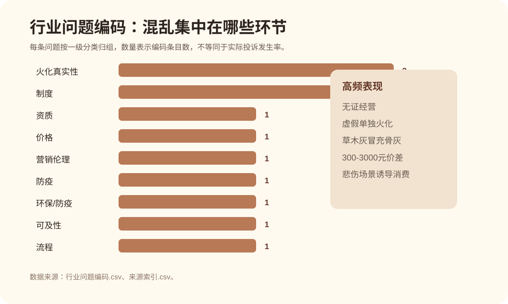
数据表 05
行业问题编码：混乱集中在资质、真实性、价格与流程
来源文件：行业问题编码.csv| 问题 | 一级分类 | 证据或表现 | 可信度 |
|---|---|---|---|
| 无证经营 | 资质 | 后备箱火化、郊区仓库、二手医用焚化炉 | 高 |
| 虚假单独火化 | 火化真实性 | 集体混烧后要求加价 | 高 |
| 骨灰真实性 | 火化真实性 | 草木灰冒充宠物骨灰 | 高 |
| 价格跨度过大 | 价格 | 基础报价300—3000元 | 高 |
| 诱导消费 | 营销伦理 | 悲伤场景临场推销高价附加项目 | 高 |
| 监管职责分散 | 制度 | 多部门职责交叉，完整服务缺统一主管 | 中高 |
混乱的市场，把每一个想要好好告别的家庭，都推入了一场信任的赌博。宠物殡葬不是没有规矩，而是规矩太多、太散，散到谁也管不了、谁也不想管。
第六章
公共服务的缺口与探索
公共服务解决的是“无害化”的卫生底线，而非“情感告别”的精神需求。宠主被夹在“什么都没有”和“什么都可能被骗”之间，进退两难。
截至2021年底，累计集体火化宠物24万余只，单独火化2万余只。两者相差超过十倍。
推出首批5家病死犬猫无害化收集暂存点，面向本市常住居民免费服务。
建成专业无害化处理厂70家、暂存点541个，实现行政区域全覆盖。
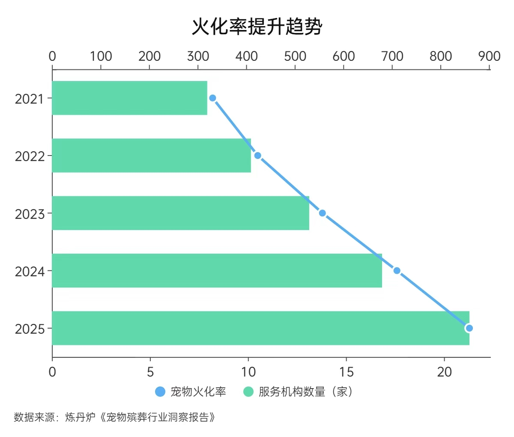
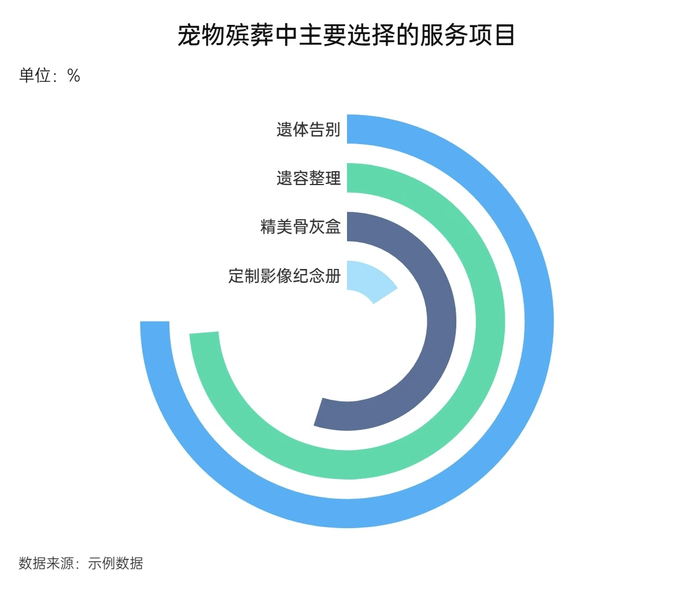
数据表 06
公共服务承接了“卫生底线”，但还没完全承接“情感告别”
来源文件：生命教育计量.csv / 可直接引用量化数据.csv| 地区 | 指标 | 时间 | 数值 | 单位 | 说明 |
|---|---|---|---|---|---|
| 上海 | 累计集体火化宠物 | 截至2021年底 | 24 | 万余只 | 公共无害化体系承接量 |
| 上海 | 累计单独火化宠物 | 截至2021年底 | 2 | 万余只 | 体现情感告别服务缺口 |
| 上海 | 签约宠物诊疗机构 | 2022答复 | 200+ | 家 | 公共服务节点网络 |
| 山东 | 专业无害化处理厂 | 2024 | 70 | 家 | 省域兜底网络 |
| 山东 | 暂存点 | 2024 | 541 | 个 | 行政区域全覆盖 |
第七章
2026，治理的拐点？
全国两会上，代表委员围绕宠物诊疗与殡葬规范建言献策，推动“它经济”在法治轨道上行稳致远。地方层面，深圳、上海、北京等地也已经出现制度探索。
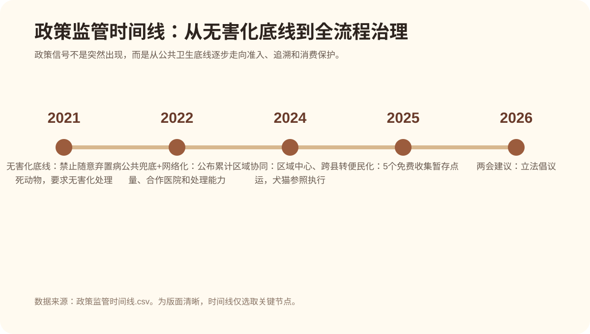
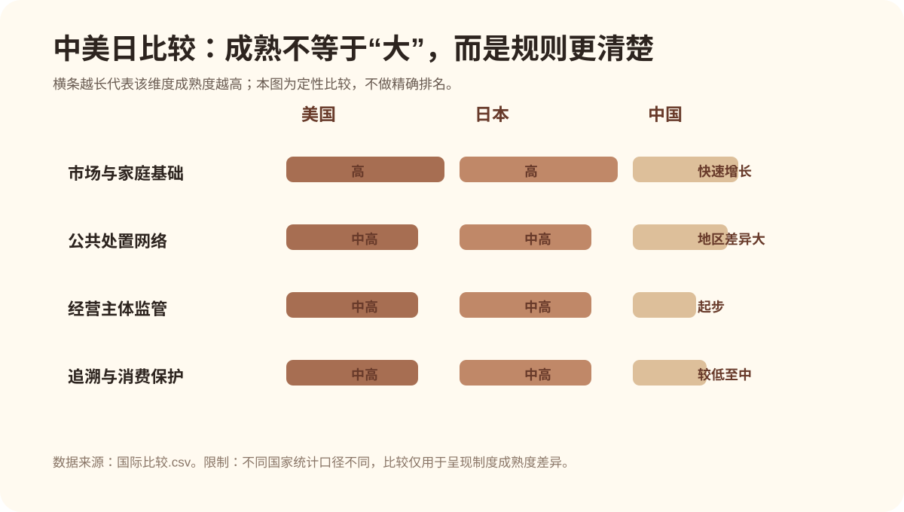
数据表 07
治理路径：从“谁来管”到“怎么证明是真的”
来源文件：政策倡议.csv| 倡议 | 具体内容 | 可执行工具 | 预期效果 |
|---|---|---|---|
| 明确行业定义与主管部门 | 区分无害化处理、商业火化、告别仪式、寄存、墓地和纪念品 | 职责清单、行业分类代码 | 职责清晰 |
| 建立经营准入与备案 | 固定场地、环保、防疫、冷藏、消毒、车辆、人员培训 | 许可证或分级备案 | 减少无证经营 |
| 一宠一码全流程追溯 | 身份核验、封签、运输、冷藏、炉次、骨灰交付 | 电子码+视频记录 | 降低假火化 |
| 价格和套餐标准化披露 | 各环节分别报价，附加项目书面确认 | 统一价目表 | 减少诱导消费 |
数据表 08
国际比较：成熟市场不是没有小机构，而是背后有规则
来源文件：国际比较.csv结语
让告别，不再是一场冒险
宠物殡葬的本质，从来不只是“处理尸体”。它是情感经济的末端环节，是生命教育的实践场域，也是城市治理的微缩样本。
情感的出口，需要制度的入口。体面的告别，不仅是对一个生命的最后尊重，也是对生者情感的最大抚慰。而这份体面，需要法律来守护，需要制度来保障，需要整个社会共同正视。
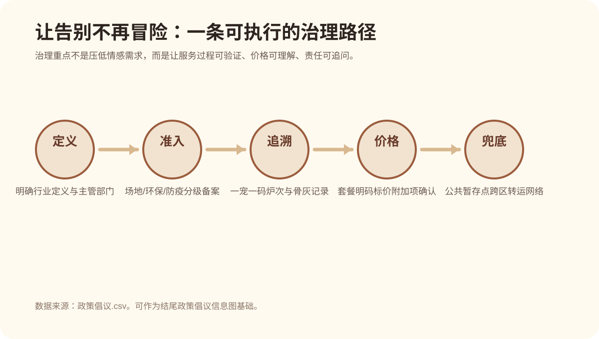
数据来源与口径说明
建议放入的数据源
- 企查查 / 天眼查相关企业检索数据
- 《2026年中国宠物行业白皮书（消费报告）》公开转述数据
- 新华社、央视网、中国青年报、澎湃新闻等公开调查报道
- 上海、昆山、山东、广州等政府公开文件与答复
- 团队问卷调查数据，样本量 n=57
口径提醒
经营范围含“宠物殡葬”等关键词的企业，不等于真实开展火化服务的机构。问卷样本以青年女性学生为主，仅用于观察青年养宠群体倾向，不代表全国总体。
本页面已根据现有数据生成可展示图表，并保留 `data/` 中的源文件。正式参赛前，建议继续核对每张图的数据口径与来源说明。